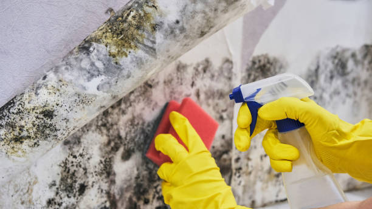

Expert mold removal in Ingalls Indiana . We use advanced techniques to tackle mold at the source, ensuring your property is mold-free and safe. Reliable mold remediation services near you in Ingalls Indiana .
Click Here To Call Us (877) 848-1711Dealing with mold issues in Ingalls Indiana ? Proto Mold Removal offers safe, efficient, and thorough mold remediation to protect your property and health. At Proto Mold Removal, we understand the unique challenges mold presents in Ingalls Indiana homes and businesses. Our certified technicians use advanced technology and proven methods to identify and eliminate mold at the source, preventing future growth.
Mold can cause serious health problems, including respiratory issues, allergies, and even structural damage to your property. Our comprehensive mold inspection and testing services in Ingalls Indiana pinpoint the extent of the problem, allowing us to create a tailored remediation plan that meets your specific needs. Whether it’s black mold in your basement, attic mold due to leaks, or mold in your HVAC system, Proto Mold Removal has you covered.
Choose Proto Mold Removal for reliable and fast mold removal in Ingalls Indiana . We are dedicated to restoring your indoor air quality and ensuring your home or business is mold-free. Don’t let mold jeopardize your property or well-being. Contact us today for a free consultation and see why we are the trusted mold remediation experts in Ingalls Indiana .
Residential & commercial Mold removal
Quality services at affordable prices
Immediate 24/ 7 emergency services


At Proto Mold Removal, we believe that mold remediation is more than just clearing out visible mold—it's about safeguarding your home and your health. What no one tells you is that mold can grow in hidden spaces, and improper removal can actually worsen the problem. Our expert team in Ingalls Indiana doesn't just treat the surface—we dive deep to ensure complete elimination of mold at its source.
With years of local expertise, we’re proud to be the most trusted mold removal service in Ingalls Indiana . We understand the unique climate challenges that promote mold growth here, and we tailor our solutions to the needs of our community. Our approach involves thorough inspections, safe and eco-friendly remediation methods, and post-removal maintenance tips to ensure your home remains mold-free.
Choose Proto Mold Removal for unparalleled customer care, advanced techniques, and guaranteed results. We’re here to protect your property and your well-being.
Residential & commercial Mold removal
Quality services at affordable prices
Immediate 24/ 7 emergency services
At Mold removal, we understand the importance of protecting the environment while handling mold infestations. Our eco-friendly mold removal services utilize sustainable and non-toxic methods to effectively eliminate mold without harming the planet. We are committed to using biodegradable products and techniques that safeguard both your health and the environment. When you choose Mold removal, you can trust that you are making a responsible choice for mold removal that respects nature and promotes a healthier living space .

Our services for mold removal in homes are comprehensive and tailored to meet the needs of families throughout Ingalls Indiana . We handle everything from inspection and testing to complete remediation and prevention strategies. Educating homeowners about mold and its adverse health effects is crucial for us, and we empower you with information and resources as we thoroughly eliminate mold from your property. Choose us to ensure a safe and healthy home environment.

Trusting your property to certified mold removal experts is essential in ensuring a thorough and professional job. Our team in Ingalls Indiana comprises licensed and trained professionals with extensive experience in mold inspection and removal. We adhere to industry standards and best practices, ensuring that our methods are effective, safe, and compliant with all regulations. With our expertise, you receive not only a service but also a partnership aimed at protecting your property and health. Choose us for certified mold removal experts dedicated to delivering exceptional service and results—because your trust is our most valuable asset.

Identifying mold is the first step to effective remediation. At Mold removal, we offer comprehensive mold testing and removal services . Our mold testing processes are thorough, offering accurate results that help us develop a targeted removal strategy. Following the testing, our trained specialists work diligently to remove mold safely and efficiently from your property. We believe in providing complete transparency and support throughout the testing and removal process, ensuring that your space is healthy and mold-free.

Mold and water damage often go hand in hand, requiring a specialized approach for effective remediation. Our mold removal and water damage restoration services address the root cause of mold growth by effectively drying and restoring properties after water damage incidents. Our trained professionals are equipped to handle the complexities of both mold and moisture issues, ensuring your space is returned to its previous condition. We provide comprehensive services that prioritize safety, sanitation, and swift restoration to protect your property.
For business owners, mold problems can disrupt operations and pose health risks to employees and customers. At Mold removal, we specialize in comprehensive mold remediation services tailored for businesses . Our team is experienced in handling commercial properties and understands the urgency of restoring a safe environment while minimizing downtime. We use advanced equipment and proven methods to ensure thorough remediation, allowing your business to return to normal operations quickly. Choose Mold removal for reliable mold remediation services designed for the business sector.

Searching for mold removal specialists near me? Look no further! Our team of professional mold specialists serves Ingalls Indiana and surrounding areas with dedication and expertise. With our advanced training and experience, we guarantee efficient and effective mold removal services that meet your specific needs. Whether in residential or commercial spaces, our specialists are here to help you combat mold with reliable solutions that last.

Toxic mold poses serious health risks and should be treated as a priority. Our specialized toxic mold removal services in Ingalls Indiana focus on identifying and eliminating dangerous mold types such as black mold. Our team is trained to handle toxic mold themes efficiently, while implementing safety measures to ensure everyone’s protection during the process. Trust us to provide you with a healthy, safe living environment by eliminating harmful mold for good.
Years Experience
Expert Technicians
Satisfied Clients
Compleate Projects
At Proto Mold Removal, we pride ourselves on being the top choice for mold removal services across all cities in Ingalls Indiana . Our commitment to excellence sets us apart from the competition. When you choose us, you’re opting for unparalleled expertise and a proven track record in effective mold remediation.
Our team of certified professionals uses state-of-the-art technology and advanced techniques to tackle even the most challenging mold problems. We begin with a comprehensive inspection to identify the extent of mold growth and the underlying causes. This thorough approach allows us to develop a customized remediation plan tailored to your specific needs.
What makes Proto Mold Removal stand out is our dedication to both efficiency and safety. We prioritize using environmentally friendly, non-toxic products that are safe for your family, pets, and property. Our goal is to not only remove mold but also to prevent future occurrences through expert advice and preventative measures.
We understand the urgency of mold issues, which is why we offer prompt and reliable service across Ingalls Indiana . Our transparent pricing and clear communication ensure you’re fully informed every step of the way.
Choose Proto Mold Removal for a hassle-free, professional mold removal experience. Contact us today to schedule your inspection and discover why we are the trusted name in mold remediation across Ingalls Indiana . Your path to a cleaner, healthier environment starts with us.
When you find mold in your home or business, the urgent need for professional help is clear. Searching for mold removal near me shouldn't be a daunting task. At our company, we understand the stress and anxiety that mold can bring. Our expert team is dedicated to providing quick, efficient, and thorough mold removal solutions tailored to the unique needs of Ingalls Indiana . We utilize the latest techniques and technologies to identify and eliminate mold from your property, ensuring a safe and healthy environment. Our certified specialists are knowledgeable, experienced, and ready to assist you at any moment, giving you peace of mind when you need it most.
Mold remediation is a crucial process that goes beyond simple cleaning. At Mold removal, we specialize in comprehensive mold remediation services designed to ensure that mold is not just removed but prevented from returning. Our trained professionals follow industry standards and best practices, utilizing advanced methods and equipment. We conduct thorough inspections, identify the source of moisture, and execute a remediation plan customized for your specific circumstances. By choosing Mold removal, you are choosing to protect your investment, health, and peace of mind. We are proud to serve the Ingalls Indiana community with diligence and care.
Mold issues can be expensive to address, but at Mold removal, we believe that effective solutions should be accessible. Our affordable mold removal services in Ingalls Indiana don’t sacrifice quality for cost. We provide precise estimates and transparent pricing, ensuring you understand each step of the process. Our approach saves you money in the long run by addressing mold problems swiftly before they escalate. Count on us for reliable service that won’t break the bank, allowing you to enjoy a safe and clean environment without financial strain.
Black mold is notoriously infamous for its health risks and potential damage to homes and businesses. When you discover black mold, immediate action is essential. Our black mold removal services at Mold removal are designed to carefully and effectively eliminate toxic mold while safeguarding you and your property. Our certified mold specialists are equipped with the right tools and knowledge to handle hazardous materials and ensure thorough removal. We focus on providing a safe environment for you and your family while restoring your space. Trust Mold removal for expert black mold removal .
Your home is your sanctuary, and mold can quickly turn it into a hazardous environment. Our residential mold removal services at Mold removal are tailored specifically for households in Ingalls Indiana . We provide comprehensive assessments, targeted removal strategies, and preventative measures to ensure your home remains mold-free. With our commitment to using safe, eco-friendly products and techniques, we work diligently to restore both safety and comfort to your living space. Choose us to protect the health of your loved ones with our dedicated residential mold removal services.
Businesses cannot afford the downtime associated with mold growth. At Mold removal, we understand the urgency and professionalism required when dealing with commercial properties. Our mold remediation services are designed to minimize disruption while effectively removing mold and restoring the integrity of your business environment. We work around your schedule to carry out remediation, ensuring that your operations can continue smoothly. Choose Mold removal as your trusted partner for mold remediation in the business sector.
When time is of the essence, professional mold removal becomes crucial. We provide fast, effective, and professional mold removal services to the residents of Ingalls Indiana . Our team is composed of certified mold removal experts who are trained to handle any mold issue that may arise. Our reputation in the area comes from our meticulous approach to mold detection and cleanup. With our services, you can rest easy knowing that your mold problems will be addressed promptly and thoroughly by the best in the business.
Supporting local businesses is important, especially when it comes to essential services like mold removal. As a trusted local mold removal company in Ingalls Indiana we understand the specific challenges that affect our community regarding mold growth and prevention. Our loyal team is always ready to respond promptly, providing tailored solutions that meet your local needs. By choosing us, you benefit from our in-depth knowledge of the area, our commitment to quality service, and our passion for helping our neighbors achieve healthier environments.
When searching for the best mold removal services look no further! Our company combines years of experience, advanced technologies, and a dedicated team committed to excellence. Our holistic approach addresses not only the immediate mold crisis but also identifies underlying issues contributing to mold growth. We go above and beyond to ensure your environment is safe and healthy. With glowing testimonials from satisfied customers, we establish ourselves as the best choice for mold removal.
Effective mold removal starts with a precise inspection. Our mold inspection and removal services are thorough, identifying hidden mold and root causes that could lead to recurrent issues. Our trained inspectors utilize advanced tools to assess your property accurately and efficiently. After detection, our skilled removal team uses safe techniques to eliminate mold and prevent future occurrences. Choose us to ensure that your property is free from mold, receiving top-notch inspection and removal services tailored specifically for Ingalls Indiana .
Mold can strike unexpectedly, creating urgent situations that require immediate attention. Our emergency mold removal services are designed to provide rapid response and effective solutions when you need them the most. Our dedicated team is available 24/7, ready to tackle any mold emergency with efficiency and care. We utilize swift assessment techniques followed by prompt remediation, minimizing the damage to your property. Count on us for dependable, round-the-clock emergency services.
Understanding the costs associated with mold remediation is important for planning. At Mold removal, we provide detailed mold remediation cost estimates that are transparent and tailored to your specific situation. Our team conducts a thorough assessment to identify the extent of the mold problem and the necessary remediation measures, allowing us to provide an accurate and fair estimate. We believe in honesty and integrity in our pricing, ensuring you are fully informed before any work begins. Reach out for an estimated cost that fits your budget.
Prevention is the best strategy against mold growth. At Mold removal, we provide mold prevention services designed to keep your home or business in Ingalls Indiana mold-free. We analyze your property to identify potential moisture problems and recommend practical solutions, including proper ventilation, humidity control, and water damage repair. Our proactive approach to mold management means you won't have to worry about future mold infestations. Trust us to help keep your environment safe and healthy with our expert mold prevention services.
Safety should always be the priority during mold removal. We utilize safe mold removal techniques to ensure that your family and pets remain unharmed throughout the process. Our specialists are trained in environmentally sound practices that eliminate mold without introducing harmful chemicals to your home. Whether you're dealing with a small patch or a large infestation, we approach each job with care and the utmost respect for your living space. Choose us for a safe, effective, and responsible mold removal solution.
The crawl space is a common area for mold growth, often overlooked until it becomes a significant issue. At Mold removal, we specialize in crawl space mold removal services . Our experts conduct thorough inspections to identify mold and moisture issues in your crawl space, employing specialized techniques for effective removal and remediation. We also provide recommendations for improving ventilation and moisture control to prevent future mold growth. Trust Mold removal to ensure your crawl space is mold-free and healthy.
Basements are typically damp environments, making them susceptible to mold growth. Our basement mold removal services are designed to tackle mold issues effectively, restoring safety and comfort to your lower levels. We perform comprehensive assessments followed by thorough clean-up and removal processes to ensure your basement is mold-free. Our professional team also provides valuable advice on enhancing ventilation and moisture control to prevent mold from returning, delivering lasting results for your home.
The attic is another area of your home that can easily become a breeding ground for mold, especially if ventilation and humidity are not properly managed. Our attic mold removal services in Ingalls Indiana focus on providing comprehensive assessments to detect mold presence and the factors contributing to its growth. We implement effective removal procedures and corrective measures to reduce moisture and enhance ventilation, ensuring that your attic remains free of mold long-term. With our expertise, you can trust that your attic will be restored to a safe, mold-free environment that supports your home’s overall integrity.
At Ingalls Indiana we understand that mold removal and remediation costs can be a concern. At Proto Mold Removal, we offer flexible and transparent payment options tailored to your needs. Our expert team provides a free assessment to determine the extent of the mold problem and offers competitive pricing without hidden fees. We accept various payment methods, including credit cards, debit cards, and financing options to make our services accessible to all. As the top mold removal company in Ingalls Indiana we strive to ensure you get the best value and efficient service without compromising quality. Trust us to protect your home and your health!
Ingalls is a town in Green Township, Madison County, Indiana, United States. It is part of the Indianapolis–Carmel–Anderson metropolitan statistical area. The population was 2,223 at the 2020 census.
Yes, we provide emergency mold removal services to quickly address urgent mold issues .
The cost depends on the extent of the mold problem. We offer free estimates to provide an accurate price for mold removal in Ingalls Indiana .
Yes, we are fully licensed and certified to provide professional mold removal services .
Small areas of mold can be cleaned, but for extensive or toxic mold, professional removal is recommended .
Yes, removing mold can significantly improve indoor air quality and reduce allergy symptoms .
We offer comprehensive mold removal, mold inspection, and mold remediation services for residential and commercial properties .
Yes, we provide mold removal services for offices, retail spaces, and other commercial properties in Ingalls Indiana .
Yes, we can remove mold from carpets, but in some cases, replacement may be necessary if the mold is extensive .
Signs of mold include a musty odor, visible growth, water damage, or health symptoms like coughing or sneezing .
Yes, mold can weaken walls, ceilings, and wooden structures, leading to costly repairs if left untreated .
It depends on your insurance policy. We recommend checking with your provider, and we can help with documentation for claims in Ingalls Indiana .
Black mold, or Stachybotrys, can produce harmful toxins that affect your health. It's important to remove black mold immediately in Ingalls Indiana .
If you find mold, contact us immediately for an inspection and removal to prevent health risks and property damage .
Yes, we offer air duct mold removal to ensure clean, healthy air quality in your home or office in Ingalls Indiana .
Yes, certain types of mold can cause respiratory issues, allergies, and other health problems. It's essential to remove mold promptly .
Some molds, like black mold, produce mycotoxins that can be harmful. Testing can confirm the type of mold .
Yes, we offer mold remediation services following water damage to prevent mold growth .
Mold testing can help identify the type of mold and extent of the problem. We offer both testing and removal services .
To prevent mold from returning, address moisture issues, improve ventilation, and maintain regular inspections in Ingalls Indiana .
Yes, we offer mold prevention solutions, including moisture control and ventilation improvements .
You can schedule a mold inspection by calling us or using our online booking system .
Basements, bathrooms, kitchens, and areas with water leaks are most prone to mold growth in Ingalls Indiana .
Mold thrives in areas with moisture and poor ventilation, such as bathrooms, basements, and areas with water damage .
Our process includes mold inspection, containment, removal, cleaning, and prevention to ensure the mold problem is fully addressed in Ingalls Indiana .
Yes, we specialize in mold removal from basements, crawl spaces, and other damp areas in Ingalls Indiana .
Yes, we safely remove mold from drywall and replace any damaged sections to prevent further issues .
We use advanced techniques and moisture control solutions to prevent mold from returning after removal in Ingalls Indiana .
Yes, we provide thorough mold inspections to assess the presence and extent of mold in your home or business .
The duration varies by the size of the affected area, but most mold removal jobs take 1-3 days .
Yes, we specialize in removing mold from attics, crawl spaces, and other hard-to-reach areas .
The service from Proto Mold Removal in Ingalls Indiana was outstanding. Their team was prompt, thorough, and very effective in handling our mold issue. I’m very pleased with their work and highly recommend them! – Brandon S.
Profession
Proto Mold Removal in Ingalls Indiana did a fantastic job. Their team was efficient, knowledgeable, and handled our mold issue professionally. The results are excellent, and we are very satisfied with their service! – Lisa D.
Profession
Proto Mold Removal did a superb job in Ingalls Indiana . Their team was prompt, professional, and efficient in dealing with our mold issue. The quality of their work was impressive. I’m very satisfied with the results! – Sandra M.
Profession